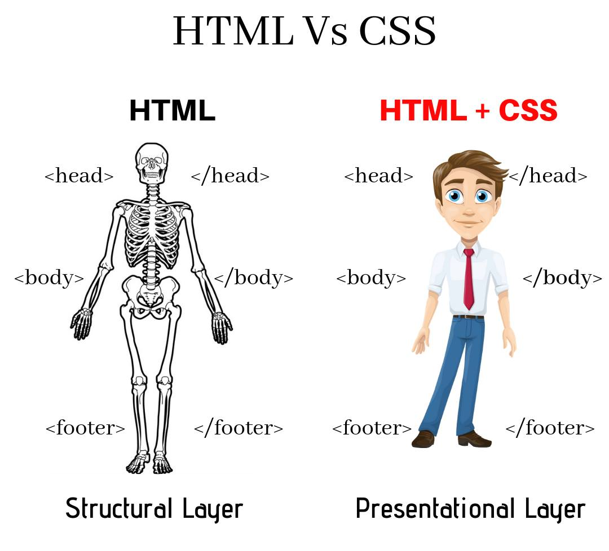
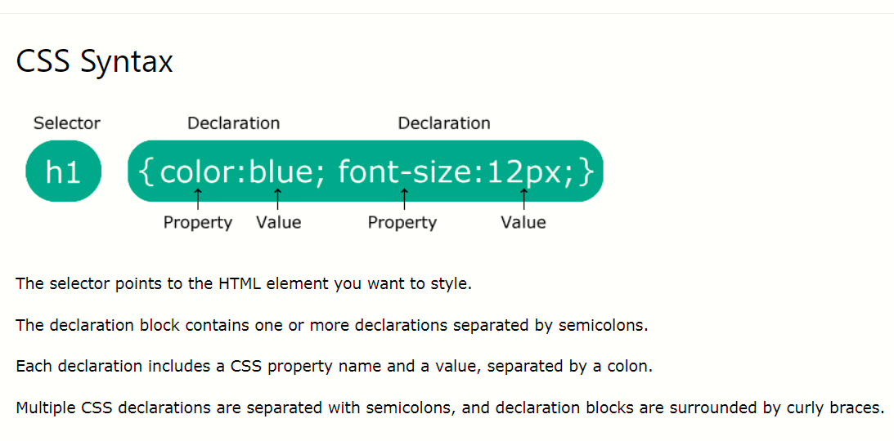

introduction
What is CSS?
- CSS stands for Cascading Style Sheets.
- CSS describes how HTML elements are to be displayed on screen, paper, or in other media
- CSS saves a lot of work. It can control the layout of multiple web pages all at once
- External stylesheets are stored in CSS files
Exmaple:

Why use CSS?
CSS is used to define styles for your web pages, including the design, layout and variations in display for different devices and screen sizes.
How to save a CSS file?
The style definitions are normally saved in external .css files.
Type of CSS.
inline CSS
internal CSS
External CSS
CSS Syntax

Selector
The CSS id Selector
The id selector uses the id attribute of an HTML element to select a specific element.
The id of an element is unique within a page, so the id selector is used to select one unique element!
To select an element with a specific id, write a hash (#) character, followed by the id of the element.
Example:
#para1 {
text-align: center;
color: red;
}
The CSS class Selector
The class selector selects HTML elements with a specific class attribute.
To select elements with a specific class, write a period (.) character, followed by the class name.
Example:
.p{
color;red;
text-align: center;
}
CSS Comments
CSS comments are not displayed in the browser, but they can help document your source code.
A CSS comment is placed inside the style element, and starts with /* and ends with */